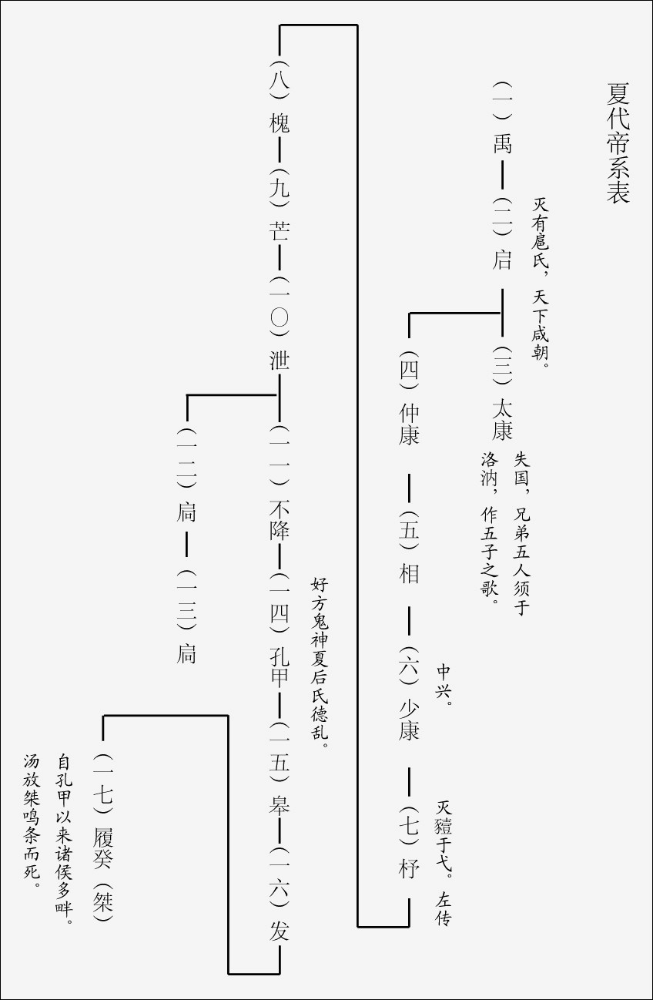
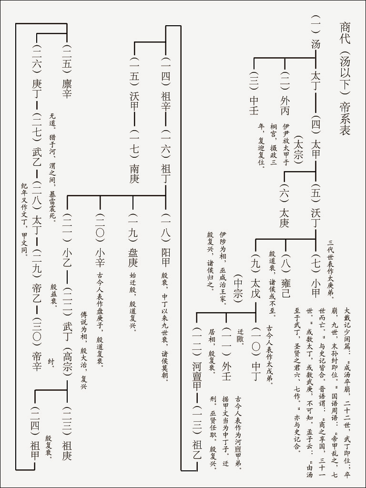
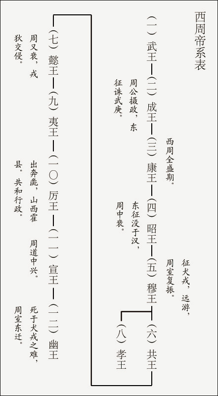
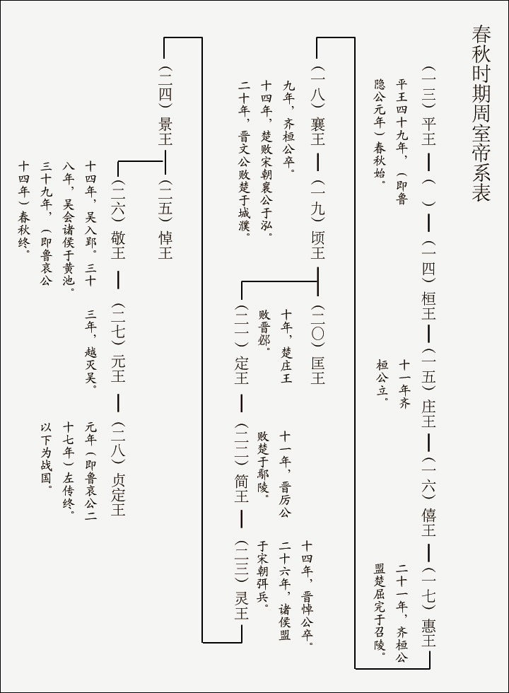
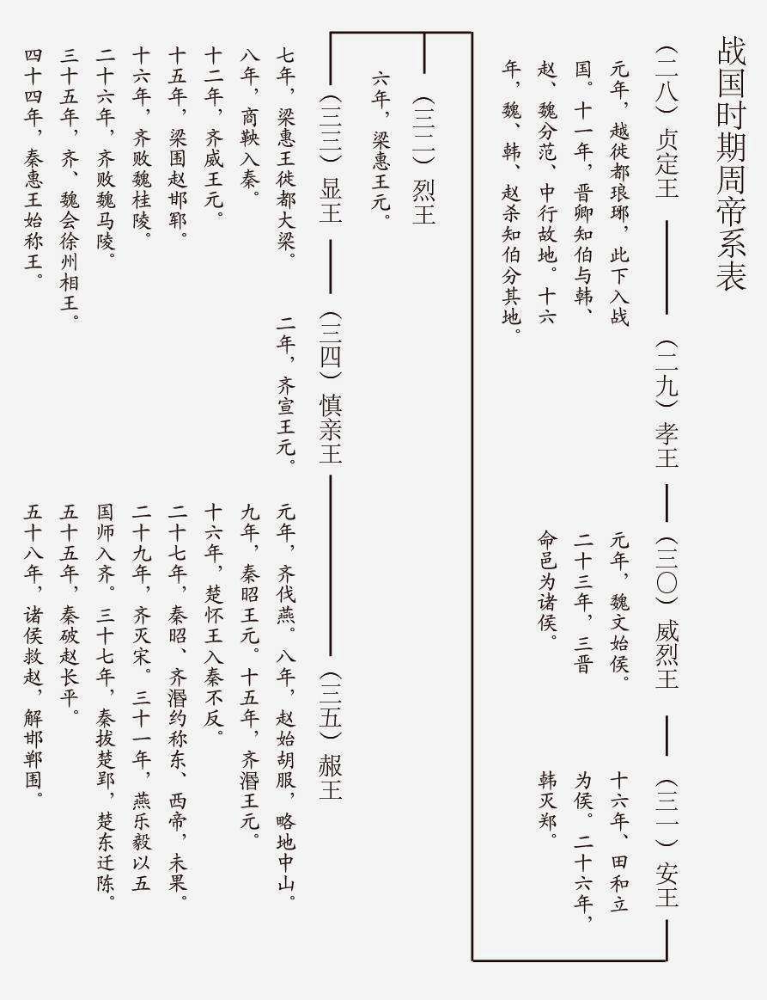
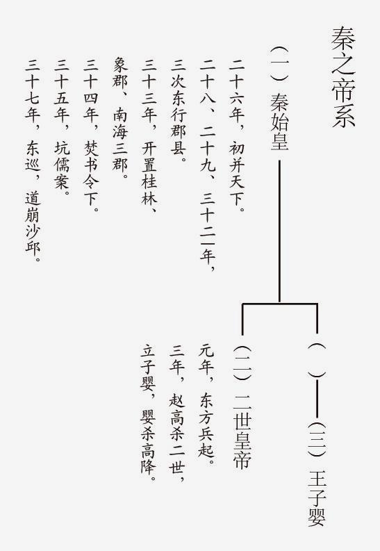
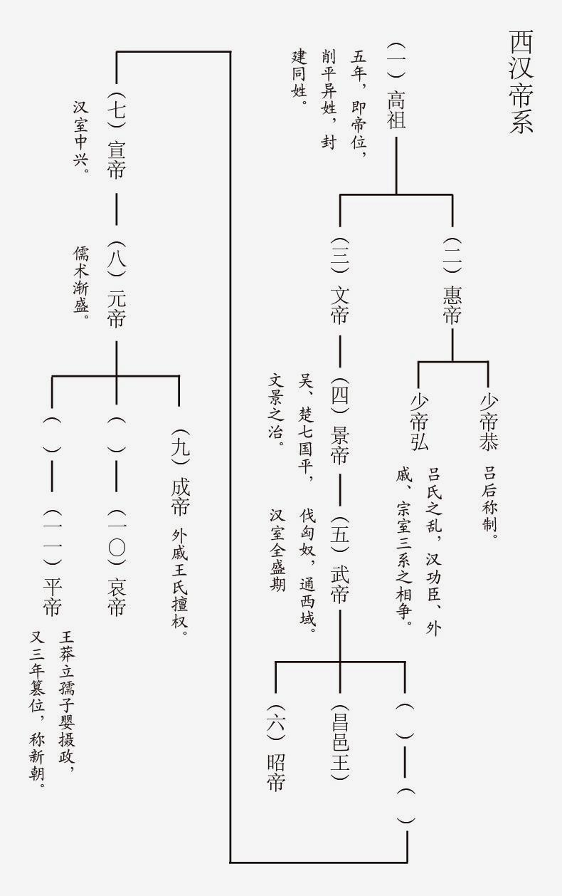

钱穆，字宾四，江苏无锡人，一八九五年生，一九九〇年八月逝世。1912年始为乡村小学教师，后历中学而大学，先后在燕京大学、北京大学、清华大学、西南联合大学等数校任教。1949年只身去香港，创办新亚书院，1967年起定居台湾。著有《国学概论》、《先秦诸子系年》、《周公》、《墨子》、《中国近三百年学术史》、《国史大纲》、《中国历代政治得失》、《政学私言》、《论语新解》、《庄子纂笺》、《朱子新学案》、《中国学术通义》、《中国学术思想史论丛》、《中国文学论丛》、《晚学盲言》、《师友杂忆》等约六十种书。
上古文化三代
第一章 中原华夏文化之发祥【中国史之开始虞夏时代】
1. 近代对上古史之探索
史前遗物发掘
- 旧石器时代遗址。（1）早期旧石器时代(“北京人”与“蓝田人”);（2）中期旧石器时代;（3）晚期旧石器时代
- 新石器时代遗址。（1）黄河中下游（仰韶“彩陶文化”、龙山“黑灰陶文化”）；（2）长江中下游；（3）其它
- 殷墟。
传说神话审订
大体上研究古史，应有其相应之限度，凡及年历、人物、制度、学术等等，过细推求，往往难得真相。
然古史并非不可讲，从散见各古书的传说中去找寻，仍可得一个古代中国民族活动情形之大概。此种活动情形，主要的是文化状态与地理区域。
2. 中原华夏文化之发祥
唐、虞当为今山西南部之两部落。而夏人则起于今河南省中部，正是所谓中原华夏之地。
3. 夏代帝王及年历
大体夏代年历在四百、五百年之间。大体夏代年历在四百、五百年之间。

4. 虞夏大事
- 舜、禹征三苗
- 禹、启伐有扈
第二章 黄河下游之新王朝【殷商时代】
1. 殷代帝系及年历
史记载殷帝王有名字世次，无年数。大体论之，殷商一代年历，应在五百年左右。

2. 殷人居地之推测
殷人居地，大率似在东方。自汤以前，大体皆在今河南省大河南岸商丘之附近。
3. 殷人文化之推测
根据殷墟甲骨文字，知商代耕稼、种植、牧畜、建造、关于人类生事各方面之文化程度，已颇象样。根据商代传世钟鼎之多与精，更可见其时文化程度之高。
4. 殷周关系
殷、周之关系，已显如后代中央共主与四方侯国之关系。
第三章 封建帝国之创兴【西周兴亡】
周人起於西方。较之夏、商似为后起。
1. 西周帝系及年历
西周十一世十二君，其年历大约不出三百年。

2. 周初之封建
周人封建，亦由当时形势之实际需要逐步逼桚而成，同时亦是周民族对於政治组织富於一种伟大气魄之表见。
1）武王灭纣以后，并不能将殷人势力彻底铲除，因此仍封纣子禄父【即武庚】于殷。其他如鲁、燕、齐诸国，始封皆在成周之南。
2）武王克殷二年，天下未宁而崩。周公摄政，管叔等三监转联殷同畔，东方整个旧殷王朝的势力（三监、殷、奄、熊盈族、淮夷、徐戎），一时俱起。周公亲自东征，杀管叔。定乱，乃重定封国：
- 鲁：周公子伯禽伐淮夷、徐戎，遂封於鲁。
- 齐：封太公子丁公于齐。
- 卫：封康叔于卫，得殷民七族。
- 宋：封微子启于宋。
- 晋：封唐叔于夏墟。
- 蔡：封蔡仲于蔡
- 东都：周公又管洛邑为东都。置殷顽民焉。
周公摄政七年，而始归政於成王，於是周人传子之制亦因而确定。
3. 西周势力之继续东展
西周的封建，乃是一种侵略性的武装移民与军事占领，与后世统一政府只以封建制为一种政区与政权之分割者绝然不同。周人立国，是一个坐西朝东的形势。其国力的移动，大势可分两道：
- 第一道由陜西出潼关，向河、洛，达东都，经营黄河下流。此武王伐殷、周公东征之一线。（昭王南征不复）
- 第二道由陜西出武关，向江、汉，经营南阳、南郡一带，以及淮域。此文王化行南国之一线。（穆王西征）
4. 幽王见杀与平王东迁
幽王遭犬戎之难，见杀於骊山下，似犬戎居地亦在周之东南。幽王既死，周室遂分裂。
及平王东迁，以弑父嫌疑，不为正义所归队，而周室为天下共主之威信亦扫地以尽，此下遂成春秋之霸局。
春秋战国
第四章 霸政时期（春秋始末）
1. 春秋年历及分期

2. 霸前时期之形势
周室东迁 –> 王命不行 –> 1）列国内乱； 2）诸侯兼并 –> 戎狄横行 –> 齐桓、晋文之霸业
3. 齐桓晋文之霸业
霸者标义，大别有四：
- 尊王：当时霸者号令，即替代已衰之王权也。
- 攘夷
- 禁抑篡弑：凡某国遇篡弑，同盟诸国互不承认，并出兵平乱，另立新君。
- 裁制兼并：凡在同盟，互不侵犯，有争端，请于盟主，公断。
自有霸政，而封建残喘再得苟延。霸政可以说是变相的封建中心。其事创始于齐，赞助于宋，而完成于晋。
总观当时霸政，有二大要义：
- 一则为诸夏耕稼民族之城市联盟，以抵抗北方游牧部落之侵略，因此得保持城市文化，使不致沦亡于游牧之蛮族。
- 二则诸夏和平结合以抵抗南方楚国【西方秦国。】帝国主义者之武力兼并，因此得保持封建文化，使不致即进为郡县的国家。
4. 霸政衰微后之大夫执政
封建初期的国家，其先只限于一个城圈。（一国只限于一城）。
以后人口渐繁殖，国家规模日扩大，不仅对旧的有吞并，对新的也亦有城筑。于是列国遂各自分封其大夫。春秋初，大夫尚无世爵，其后渐有赐氏。
渐称“子”。（于是原先的侯国，俨然如一新中央，而大夫采邑则俨然成一小侯国，所以说是西周封建的继续推进。）
又因当时联盟各国，会聘频仍，诸侯畏劳，常使卿大夫代行。卿大夫既有外交，往往互相援结，渐渐形成大权旁落之势，于是大夫篡位，造成此后战国之新局面。
5. 春秋时期之一般文化状态
古代的贵族文化，实到春秋而发展到它的最高点。
当时的贵族，对古代相传的宗教均已抱有一种开明而合理的见解。因此他们对于人生，亦有一个清晰而稳健的看法。
“天道远，人道迩”、“鬼神不享非礼”
当时的国际间，虽则不断以兵戎相见，而大体上一般趋势，则均重和平，守信义。外交上的文雅风流，更足表显出当时一般贵族文化上之修养与了解。即在战争中，犹能不失他们重人道、讲礼貌、守信让之素养，而有时则成为一种当时独有的幽默。
贵族阶级之必须崩溃，平民阶级之必须崛兴，实乃此种文化酝酿之下应有之后果。
第五章 军国斗争之新局面（战国始末）
1. 战国年历及分期
本时期的历史记载，因秦廷焚书，全部毁灭。西汉中叶司马迁为史记，已苦无凭。大略言之，本时期历史，又可分为前、后两期。
1）第一期是周代宗法封建国家之衰灭。
此承春秋晚期大夫专政之局面而来。晋分为三家，【魏、韩、赵。】齐篡于田氏，【田氏本陈公子，因乱奔齐，“田”、“陈”同音之转。】鲁则三桓强于国内，公室仅如小侯。卫势日削，自贬其号曰侯。吴灭于越，陈、蔡灭于楚，郑灭于韩、史记所谱春秋十二诸侯，能继续保持其重要地位者惟楚、秦二国而已。
鲁、卫以文化维持当时宗法封建国家之传统尊严，齐、晋则以武力维持当时宗法封建国家之传统地位。 楚、秦则代表相反对之一种势力也。诸国中受封建传统文化束缚愈深者，其改进愈难。
诸夏和平联盟之锁链已断，各国遂争趋于转换成一个新军国，俾可于列国斗争之新局面下自求生存。
2）第二期是新军国成立以后之相互斗争时期。
此时期又可分为四期：
- 梁惠王称霸时期（梁、齐争强时期）。李克、吴起变法；桂陵、马陵之战；徐州相王。
- 齐威、宣、湣三世继梁称霸期（齐、秦争强时期）。威王两败梁国；商鞅变法；张仪专务离间梁、楚以孤齐。齐为第一等强国，故积极的主侵略；秦次于齐，故仅在外交上用手段孤削齐势。至齐湣王灭宋，国际均势破裂，此下遂起大变局。
- 秦昭王继齐称强期（秦、赵争强时期）。齐宣王灭燕；赵国经武灵王胡服骑射灭中山；齐湣王灭宋；乐毅联合秦、魏、韩、赵五国之师入齐；长平之战，赵为秦败，于是秦并天下之形势遂成。
- 秦灭六国期。

2. 从宗法封建到新军国之种种变迁
1）郡县制之推行。政府直辖下的郡县，代替了贵族世袭的采地。郡县政令受制于中央，郡县守令不世袭，视实际服务成绩为任免进退，此为郡县制与宗法封建性质绝不同之点。
相随于郡县制度而起者：
- 第一即为贵族世卿与游仕势力之更迭。战国游仕分析，一大学者及其弟子，如荀卿、李斯等。二庶孽公子及先世仕宦，如商鞅、乐毅等。三资产在中人以上，如吴起、吕不韦等。四贫士，如张仪、范睢、虞卿等。五贱臣下吏，如申不害、赵奢等。
- 其次，则有军民之渐趋分治。将军与守臣之分职特派，此即军民分治之见端。
- 又有食禄之新制度。
2）井田制之废弃。商鞅废井地而开阡陌封疆为古代贵族封建分割性之主要标帜。现在政治上已由封建变为郡县，自可打开格子线，铲除田岸围墙，化成一片。此即李悝“尽地力”之教。
别有促成之原因：
- 人口之繁殖
- 耕器之进步
- 水利工程灌溉事业之发达
- 税收方法之改变（公田制的“助”法、“履亩而税”）
3）农民军队之兴起。贵族阶级渐次奢侈安逸，国际战争渐次扩大剧烈，农民军队之编制，遂成一种新需要。三晋与田氏以大夫篡位，旧贵族失其地位，渐次设立以军功得官之制度。吴起在楚，商鞅在秦，亦严行以军功代贵族之新法。
4）工商业大都市之发展。春秋时，工商皆世袭食于官，盖为贵族御用，非民间之自由营业。封建贵族渐渐崩渍，而自由经商者乃渐渐兴起。大抵东方各国，渐从商业资本转入文学游仕，始终奖励农战的国家惟有秦。
5）山泽禁地之解放。如捕鱼、煮盐、烧炭、采铁、铸钱、伐木，种种新生产事业，皆由农民侵入禁地而始有。
6）货币之使用。因商业发展而货币之使用遂兴，亦为一新形态。
总之春秋以至战国，为中国史上一个变动最激剧的时期。政治方面，是由许多宗法封建的小国家，变成几个中央政权统一的新军国。社会方面，则自贵族御用工商及贵族私有的井田制下，变成后代农、工、商、兵的自由业。而更重要的，则为民间自由学术之兴起。
第六章 民间自由学术之兴起（先秦诸子）
1. 春秋时代之贵族学
上古学术，其详难言。据春秋而言，学术尚为贵族阶级所特有。贵族封建，立基于宗法。国家即是家族之扩大。
史官随着周天子之封建与王室之衰微，而逐渐分布流散于列国，即为古代王家学术逐渐广布之第一事。
一切非礼，逐渐从贵族之奢僭中产生。一方面贵族对礼文逐次铺张，一方面他们对礼文又逐次不注意，于是贵族中间逐渐有“知礼”与“不知礼”之别，遂有所谓学者开始从贵族阶级中间露眼。
在贵族阶级逐渐堕落的进程中，往往知礼的有学问的比较在下位，而不知礼的无学问的却高踞上层。于是王室之学渐渐流散到民间来，成为新兴的百家。
2. 儒墨两家之兴起
1）百家的开先为儒家。儒家的创始为孔子。
2）继续儒家而起者为墨家，墨家的创始人为墨子。
3）以下战国学派，全逃不出儒、墨两家之范围。
极端右派，则为后起之法家。极端左派，则为后起之道家。法家、阴阳家、纵横家，皆属右。道家、农家、名家，皆属左。惟从另一面看，右派皆积极而向前，因其比较温和，得保持乐观故。而左派常偏于消极与倒转，因其比较激烈，易限于悲观故。
（PS：首次读钱穆的书，不了解其对先秦思想的划分，此部分略感惊奇。以后可读读他的《中国思想史》，做详细了解。）
3. 学术路向之转变
孔子死后，贵族阶级，堕落崩坏，益发激进，儒家思想暂转入消极的路去，如子夏、曾子等是。
从此等消极状态下又转回来，重走上积极的新路，便成后来之所谓法家。法家用意，在把贵族阶级上下秩序重新建立，此仍是儒家精神。自吴起、商鞅以下，渐渐变成以术数保持禄位的不忠实态度，其人如申不害。
游仕渐得势，他们不仅以术数保持禄位，不肯竭诚尽忠，他们还各结党羽，各树外援，散布在列国的政府里，为他们自身相互间谋私益。这便成所谓“纵横”之局。这一派的代表如公孙衍、张仪。
墨家本该与政治绝缘，然而墨家亦依然走上接近政治的路。墨主兼爱，因主非攻。墨主非攻，乃变为为人守御。亦因墨家本属工党，善为守御之机械也。惟为人守御，与天志、兼爱之理论，相去已远。
4. 士气高张
游仕逐渐得势，他们的学说，亦逐渐转移。他们开始注意到自身的出处和生活问题。这已在战国中期。
约略言之，可分五派：
一、劳作派。【墨家苦行教之嫡系】此可以许行、陈仲为代表。
此派主张“君民并耕”，【尚未主张无政府。此派思想往往注意社会问题，而忽略了政治情感。】主张“不恃人而食”，【各为基本的生活劳动。】似乎是墨家精神最高之表现。【陈仲子之生活，真是近世托尔斯泰晚年所想慕也。】
二、不仕派。【滑头的学士派】，此可以田骈、淳于髡为代表。
此派安享富贵生活，寄生在贵族卵翼之下，而盛唱其不仕之高论。【此必当时先有不仕之理论，而彼辈穷取之，如儒家田子方、段干木之徒，以及墨家大部分，殆均以不仕见高也。齐稷下先生皆不仕而议论，而淳于髡、田骈为之首。】
三、禄仕派。【为以法术保持禄仕之进一步活动，即纵横家也。】此可以公孙衍、张仪为代表。
此派积极的惟务禄仕，“纵横”，即联络各国禄仕主义者，以外交路线互结成一势力，以期于不可倒。
四、义仕派。【儒家之正统。】此可以孟轲为代表。
此派一面反对陈仲、许行，主张“分功易事”，承认政治的生活。【推广言之，即承认士君子礼乐的生活，亦可谓是文化的生活。此与贵族奢侈生活貌同而情异。】一面反对田骈、淳于髡，【即反对游谈寄生之生活，亦即学者之贵族生活也。】主张士“不托于诸侯”，须把官职来换俸禄。一面又反对公孙衍、张仪专以妾妇之道来谋禄位，主张以礼进退。【若义不可仕而受贵族之周济，则以不饿死为限度。】
五、退隐派。【亦可称玩世派，乃道家之正统。】此可以庄周为代表。【其先已有杨朱“为我”。杨朱、庄周，皆对儒、墨之牺牲自己以为社会之态度而怀疑其功效也。】
此派从理论上彻底反对政治事业，此层比许行、陈仲激烈，却不一定主张刻苦的劳作，又比许行、陈仲显得温和。因为反对政治事业，所以既不愿有礼乐文化，又不愿为劳苦操作，更不愿为寄生禄仕，【此派所以虽属玩世，而终成为一种严正的学派。】只有限于冥想的生活中。【其先冥想皇古生活，进则冥想自然生活。皇古生活则以黄帝时代为寄托；自然生活则为神仙，吸风饮露。可以不入世俗，不务操劳，不事学问，而自得其精神上之最高境界。】
5. 贵族养贤
平民学者逐步得势，贵族阶级对他们亦礼逐加敬礼。于是从国君养贤进一步到公子养贤。
国君养贤始如魏文侯、鲁缪公，而大盛于齐威、宣王之稷下。如齐宣王之于王斗、颜斶（chù）、燕易王之让位于子之，秦昭王之跪见张禄先生，燕昭王之筑黄金台师事郭隗。
公子养贤，以孟尝，平原，信陵，春申四人为著。
6. 平民学者间之反动思想
从此激而为反游仕、反文学之思想，则为战国晚年学术之特徵。其著者有三家：一老子，二荀卿，三韩非。
- 老子的理论，其要者，反尚智，反好动，反游仕食客。主张在上者无治，在下者归耕。
- 荀子则主礼治。礼为人伦，荀子则要把他的新人伦观来重定社会秩序，主去世袭之贵族而以才智为等级。荀子分人为四等：一大儒；二小儒；三众人；四奸人。主以圣为师，以王制为是非之封界，主定学术于一尊。
- 韩非主法治，他是一个褊狭的国家主义者，主张一阶级的权益而谋富强。他抱有强烈的阶级观念，彻底主张贵族阶级统治者之私利。（战国除韩非外，尚有屈原，亦为代表贵族意识的学者。）
战国学术思想之转变，从孔子、墨子到荀卿、韩非，恰恰是贵族阶级逐步堕落，平民学者逐步高张的一段反影、一幅写照。
秦汉
第七章 大一统政府之创建（秦代兴亡及汉室初起）
1. 秦汉帝系及年历
秦自统一称帝至亡，凡三君，十五年。

汉自高帝至平帝凡十一君，一百一十一年。王莽自摄政至建新朝迄亡，共十八年。

2. 国家民族之传成
秦人统一，此期间有极关重要者四事：
- 为中国版图之确立。【秦并六国，分建四十二郡，造成此下二千年中国疆域之大轮廊。】
- 为中国民族之抟成。【春秋时代华、夷杂处之局，逐渐消融，而成“车同轨，书同文，行同伦”之社会。】
- 为中国政治制度之创建。【封建制破弃，郡县制成立，平民、贵族两阶级对立之消融。】
- 为中国学术思想之奠定。“大同观”、“平等观”、“现实观”
3. 第一次统一政府之出现及其覆灭
秦并六国，中国史第一次走上全国大统一的路。此不专因于秦国地势之险塞及其兵力之强盛，而最要的远是当时一般意向所促成。
秦政府对统一事业，亦大有努力，举其要者，如废封建行郡县。统整各地制度文化风俗。开拓边境，防御外寇。
秦代政治的失败，最主要的在其役使民力之逾量。
秦之统一与其失败，只是贵族封建转移到平民统一中间之一个过渡。
4. 平民政府之产生
秦灭六国， 二世而亡，此乃古代贵族封建势力之逐步崩溃，而秦亡为其最后之一幕。直至汉兴，始为中国史上平民政权之初创。直到景帝削平吴、楚七国之乱，平民政府之统一事业始告完成。
平民政府有其必须完成之两大任务，首先要完成统一，其次为完成文治。汉政府之实际统一，始于景帝。汉政府文治之蒸，则始于武帝。
第八章 统一政府文治之演进（由汉武帝到王莽）
1. 西汉初年之社会
（一）农民与奴婢
封建时代的农民，对其上层统冶者，约有如下几种负担：
- 一曰税。此即地租。农民耕地，在政治观念上，系属于其地封君之所有，故农民对其封君每年应纳额定之租税。
- 二曰役。因土地所有权的观念，转移到农民的身分，耕地者对其所耕地之封君有臣属之关系。因此每年于农隙，又须对其封君为额定的几天劳役。
- 三曰赋。遇封君贵族对外有战事，农民须对其封君贡献车牛，或劳力。
- 四曰贡。此出农民情感上之自动，如逢年节，向其封君献彘、兔、鸡、鹅或丝、布之类。
就汉初情形言，农民对政府负担大体如次：
- 一、田租。
- 二、算赋。
- 三、更戍。
（二）商贾与任侠
以钱币买奴力以逐利长产，经营货殖者为商贾。以意气情谊收匿亡命共为奸利，甘触刑辟而市权势者则为任侠。任侠与商贾，正分攫了往者贵族阶级之二势。
2. 西汉初年的政府
汉高得天下，大封同姓及功臣，并明约“非刘姓不得王，非有功不得侯”。所谓有功，大体上只指军功而言。此为政府的最上层。其次的官僚，则大半由郎、吏出身。
郎官来历，不出下列数途：
- 一、荫任。苏武、韦玄成
- 二、赀选。张释之、司马相如
- 三、特殊技能。卫绾以戏车为郎，荀彘以御见侍中
吏的来历，亦无一客观标准，大体仍多为富人所得。
3. 西汉初年的士人与学术
要论汉初学术，必推溯及于先秦。秦代焚书，最主要者为六国史记，其次为诗、书古文，而百家言非其所重。
汉兴，学统未尝中断。
4. 中央政府文治思想之开始
西汉中央政府之文治思想，最先已由贾谊发其端。
先秦诸子注意教育问题者莫如儒。故苟主幼小必教，则儒业必兴。
5. 汉武一朝之复古更化
武帝英年即位，【只十七岁。】即锐意革新，谋兴礼乐。其事虽经一度挫折，终于走上复古更化的路。
武帝一朝政治上重要改革，举其要者，第一是设立五经博士。第二是为博士设立弟子员。第三是郡国长官察举属吏的制度。第四是禁止官吏兼营商业并不断裁抑兼并。第五是开始打破封侯拜相之惯例，而宰相遂不为一阶级所独占。
6. 士人政府之出现
汉政府自武帝后，渐渐从宗室、军人、商人之组合，【汉制虽禁商人入仕，然以赀选，富人其先皆商人也。】转变成士人参政之新局面。
7. 汉儒之政治思想
汉儒论政，有两要点。
- 一为变法和让贤论。
- 二为礼乐和教化论。
8. 王莽受禅与变法
王莽受禅，一面循着汉儒政治理论之自然趋势， 一面自有其外戚的地位及王莽个人之名誉为凭借。
王莽政治失败，约有数端：
- 一、失之太骤，无次第推行之计划。
- 二、奉行不得其人，无如近世之政治集团来拥护其理想。
- 三、多迂执不通情实处。【复古倾向太浓厚。莽之得国，多本齐学，有太涉荒诞者。莽之新政，多本鲁学，有太过迂阔者。】
王莽的政治，完全是一种书生的政冶。王莽的失败，变法禅贤的政治理论，从此消失，渐变为帝王万世一统的思想。【政治只求保王室之安全，亦绝少注意到一般的平民生活。这不是王莽个人的失败，是中国史演进过程中的一个大失败。
第九章 统一政府之堕落（东汉兴亡）
1. 东汉诸帝及年历

2. 东汉之王室
所谓统一政府之逐渐堕落，可分两部言之：一王室，二政府。
王室又可分三部言之：一王室自身，二外戚，三宦官。
3. 东汉之外戚与宦官
因东汉诸帝多童年即位、夭折，及绝嗣，【绝嗣外立，多择童年。】遂多母后临朝，【外立者四帝：安、质、桓、灵，临朝者六后：窦、邓、阎、梁、窦、何。】而外戚、宦官藉之用事。